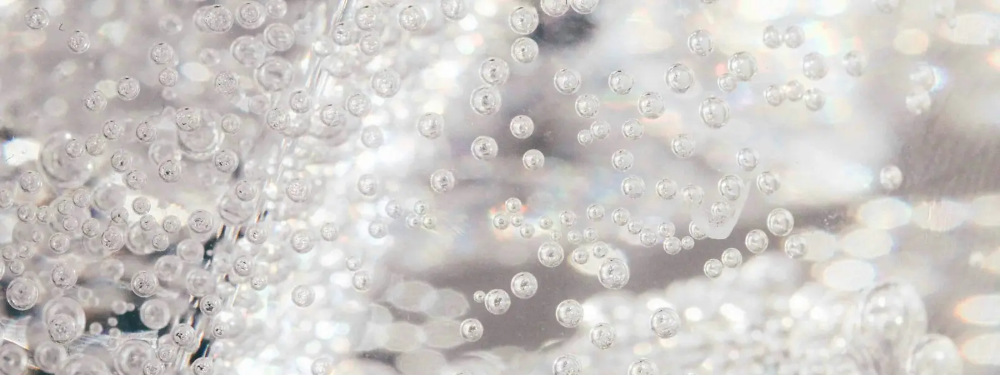

A new bottle every day, each one a classic example of its style. Come back tomorrow for the next one.
Coming up
Wine Stories
A new story from the world of wine every day: history, people, places and curious facts, each with its sources.
More stories
Grape Varieties
Wine Map
Pick a continent, then tap a dot or a name to explore.
Tap a region to see its grapes and style.
Wine Regions
Start at the home page, then choose a country, a region and a subregion.
What's for dinner?
Pick a dish to see wines that suit it.
Serving Temperatures

Style
Temp
Tip
Sparkling
6–8°C / 43–46°F
Chill about 3 hours
Light white & rosé
7–10°C / 45–50°F
Fridge for 2–3 hours
Full white
10–13°C / 50–55°F
Take out 20 minutes early
Light red
12–14°C / 54–57°F
Brief chill helps
Full red
15–18°C / 59–64°F
Cooler than room temp
Vintage Chart
Weather shapes each harvest. Ratings and drinking windows are broad, simplified summaries of the general view as of today, not verdicts on any single bottle. Producer and wine level matter as much as the year.
Region
2016
2017
2018
2019
2020
2021
2022
2023
Bordeaux
5
3
4
5
5
3
5
4
Burgundy (red)
3
4
4
5
5
3
4
4
Northern Rhône
5
4
4
5
4
4
4
4
Piedmont
5
3
3
5
4
5
4
4
Tuscany
5
3
4
5
4
5
4
4
Napa Valley
4
4
5
4
2
5
4
4
Quality5 Great 4 Good 3 Fair 2 Poor
Bottle Drink now Drink or keep Keep
Examples: 2020 Napa was hit by wildfire smoke, and 2021 Burgundy was cut by spring frost.
Glossary
Tannin
Compounds from skins and seeds that give red wine its grip and dryness.
Acidity
The freshness that makes your mouth water. High acidity feels crisp.
Body
How heavy or light the wine feels, from light as skim milk to rich as cream.
Terroir
The mix of soil, climate and landscape that shapes a wine's character.
Vintage
The year the grapes were harvested.
Brut
A dry style of sparkling wine with very little sugar.
Finish
How long the flavors linger after you swallow.
Decanting
Pouring wine into another vessel to aerate it or separate sediment.
A–Z Glossary
No matching terms.
A
Abboccato
Italian for slightly sweet.
Acidity
The freshness that makes your mouth water. High acidity feels crisp.
Aeration
Letting wine meet air so its aromas open up and its flavors soften.
Alcohol by volume (ABV)
The percentage of a wine that is alcohol, shown on the label.
Amarone
A rich Italian red from partly dried grapes in Valpolicella.
Amontillado
Sherry that starts under flor, then ages with air contact. Nutty and amber.
Angel's share
The wine lost to evaporation while it ages in barrel.
AOC
Appellation d'Origine Contrôlée: France's system of protected wine regions and the rules for each.
Aperitif
A drink served before a meal to stimulate the appetite.
Appassimento
Italian method of drying harvested grapes on racks to concentrate sugar and flavor.
Appellation
A legally defined area where grapes are grown, with rules on what can be made there.
Aroma
A smell that comes from the grape itself, such as fruit or flowers.
Assemblage
The blending of different wines or grapes into the final wine.
Astringent
A drying, grippy feeling in the mouth, usually caused by tannin.
Auslese
German Prädikat for very ripe, selected bunches. Riper than Spätlese, often sweet.
Austere
Firm, lean and restrained, with little fruit or softness.
Autolysis
The breakdown of dead yeast cells, which adds bready, biscuit notes to sparkling wine.
AVA
American Viticultural Area: a US wine region defined by geography.
B
Balance
How well acidity, sweetness, tannin, alcohol and fruit sit together without one standing out.
Balthazar
A 12-litre bottle, equal to 16 standard bottles.
Barrel aging
Maturing wine in oak barrels, which adds flavors like vanilla and spice and lets in tiny amounts of air.
Barrique
A 225-litre oak barrel, the classic Bordeaux size.
Bâtonnage
Stirring the lees in a barrel or tank to add richness and texture.
Beerenauslese
Sweet German wine from individually selected, very ripe, often botrytized berries.
Biodynamic
A farming approach that treats the vineyard as one living system and follows a set calendar of tasks.
Bitter
A sharp, unpleasant taste, often from tannin or unripe skins.
Blanc de Blancs
A white wine, often sparkling, made only from white grapes. In Champagne this means Chardonnay.
Blanc de Noirs
A white or pale wine made from dark-skinned grapes, with the juice kept away from the skins.
Blend
A wine made from more than one grape variety, vineyard or batch.
Blind tasting
Tasting wine without seeing the label, to judge it on its own merits.
Bodega
A Spanish winery or wine storehouse.
Body
How heavy or light the wine feels, from light as skim milk to rich as cream.
Bordeaux blend
A red blend of grapes such as Cabernet Sauvignon, Merlot and Cabernet Franc.
Botrytis
A mold that shrivels grapes and concentrates their sugar, used for sweet wines like Sauternes. Also called noble rot.
Bottle shock
A temporary dullness after bottling or travel that fades with rest.
Bouquet
The smells that develop as a wine ages in barrel and bottle.
Brettanomyces
A yeast that in small amounts adds savory notes, and in larger amounts barnyard or medicinal smells.
Brix
A scale measuring sugar in grape juice. Higher Brix means more potential alcohol.
Brut
A dry style of sparkling wine with very little sugar.
Bud break
The moment in spring when buds on the vines open and growth begins.
Buttery
A creamy, butter-like note, often from malolactic fermentation in Chardonnay.
C
Canopy management
Adjusting a vine's leaves and shoots to control sunlight, airflow and ripening.
Cap
The mass of skins and solids that floats on top of fermenting red wine.
Cap Classique
South African sparkling wine made by the traditional method.
Capsule
The foil or plastic covering over a bottle's cork.
Carbonic maceration
Fermenting whole, uncrushed grapes in a carbon dioxide-rich tank. It gives light, fruity reds, as in Beaujolais.
Cassis
The aroma of blackcurrant, common in Cabernet Sauvignon.
Cava
Spanish sparkling wine made by the traditional method, mainly in Catalonia.
Cellar
A cool, dark place to store wine. Also the winery's area for making and storing it.
Chalky
A dry, powdery texture or a flavor like chalk, often noted in wines from limestone soils.
Chaptalization
Adding sugar to grape juice before fermentation to raise the final alcohol level.
Charmat
The tank method of making sparkling wine, with the second fermentation in a large tank.
Château
A wine estate, especially in Bordeaux.
Claret
The traditional British word for red Bordeaux.
Climat
A named, precisely defined vineyard plot in Burgundy.
Clone
A genetic variant of a grape variety chosen for traits like yield or flavor.
Clos
A vineyard enclosed by a wall, common in Burgundy.
Cold soak
Chilling crushed grapes with their skins before fermentation to extract color and fruit.
Complex
A wine with many layers of aroma and flavor that change as you taste it.
Cooked
A flat, stewed fruit flavor from too much heat in the vineyard or storage.
Cooperage
The craft of making barrels, or the place where they are made.
Cooperative
A winery owned by a group of growers who pool their grapes.
Corkage
A fee a restaurant charges for opening a bottle you bring yourself.
Corked
A wine spoiled by a compound called TCA, giving a smell of wet cardboard or damp cellar.
Coulure
Poor fruit set after flowering, which reduces the size of the crop.
Cover crop
Plants grown between vine rows to protect soil and encourage biodiversity.
Creamy
A smooth, rounded texture, often from lees or malolactic fermentation.
Crémant
A French sparkling wine made by the traditional method outside Champagne.
Crianza
A Spanish aging category with a minimum time in barrel and bottle. Rules vary by region.
Crisp
Fresh and lively, with refreshing acidity.
Cru
French for 'growth'. It marks a vineyard or estate of recognized quality.
Crust
The thick sediment that forms in unfiltered Vintage Port.
Cuvaison
The time a red wine spends in contact with its skins during fermentation.
Cuvée
A specific blend or batch of wine. In Champagne it can also mean the first pressing of the juice.
D
Decanting
Pouring wine into another vessel to aerate it or separate sediment.
Dégorgement
French for disgorgement.
Demi-sec
Medium-sweet. For sparkling wine it is sweeter than dry.
Dense
Packed with concentrated flavor and color.
Dessert wine
A sweet wine served with or in place of dessert.
Digestif
A drink, often a spirit, served after a meal to aid digestion.
Disgorgement
Removing the yeast sediment from a bottle of sparkling wine after aging.
DO
Denominación de Origen: Spain's system of protected wine regions.
DOC / DOCG
Italy's quality labels for protected wine areas. DOCG has stricter rules and testing.
Domaine
A wine estate, especially in Burgundy.
Dosage
The small amount of sugar and wine added to sparkling wine just before final corking.
Doux
French for sweet. The sweetest level of Champagne.
Dry
A wine with little or no sugar left after fermentation.
Dumb
Describes a wine that is temporarily closed, with little aroma or flavor.
E
Earthy
Aromas or flavors of soil, mushrooms or forest floor.
Elegant
Refined and balanced, with finesse rather than power.
Élevage
The aging and handling of wine between fermentation and bottling.
En primeur
Buying wine as a future, months or years before it is bottled and released.
Estate bottled
Wine grown, made and bottled by the same producer at one property.
Esters
Aroma compounds formed during fermentation and aging that give fruity and floral notes.
Extra brut
A very dry style of sparkling wine, drier than brut.
Extra dry
For sparkling wine, a style slightly sweeter than brut.
Extract
The dissolved solids in a wine, such as color, tannin and sugar, that give it depth.
F
Fat
A full, heavy wine with low acidity.
Fermentation
The process in which yeast turns sugar into alcohol and carbon dioxide.
Field blend
A vineyard planted with several varieties that are harvested and fermented together.
Filtration
Passing wine through a filter to remove particles and microbes before bottling.
Fining
Adding a substance to clear a wine of tiny particles that cause cloudiness or harshness.
Finish
How long the flavors linger after you swallow.
Fino
A dry, pale Sherry aged under a layer of flor.
Firm
A wine with noticeable tannin or acidity that gives it a solid structure.
Flabby
A wine that tastes limp because it lacks acidity.
Flat
Lacking freshness or, in sparkling wine, lacking bubbles.
Fleshy
A soft, plump wine with ripe fruit.
Flight
A group of wines tasted together for comparison.
Flinty
A dry, smoky, struck-stone note often found in Sauvignon Blanc and Chablis.
Flor
A layer of yeast that grows on some Sherries and protects them from air.
Flute
A tall, narrow glass used for sparkling wine.
Fortified wine
Wine with added spirit, such as Port, Sherry or Madeira.
Foxy
The grapey, musky aroma typical of some American grapes such as Concord.
Free-run juice
The juice that flows from crushed grapes without pressing.
Frizzante
Italian for lightly sparkling.
Fruit set
The stage after flowering when tiny berries begin to form.
Fruit-forward
A style where ripe fruit flavors lead over earthy or oaky notes.
Full-bodied
A wine that feels rich and heavy in the mouth.
G
Glycerol
A natural compound in wine that adds smoothness and body.
Grafting
Joining a vine variety onto a separate rootstock.
Gran Reserva
Spain's top aging category, with long aging in barrel and bottle.
Grand Cru
The top tier of vineyards in Burgundy and Alsace. In Bordeaux the term is used differently by each area.
Grand vin
The main, top-tier wine of an estate.
Green
Flavors of unripe fruit, leaves or stems.
Green harvest
Cutting off some unripe bunches to reduce yield and concentrate flavor.
Grippy
A wine whose tannins grab the mouth.
Grower Champagne
Champagne made by the same estate that grows the grapes.
H
Hang time
How long grapes stay on the vine before picking.
Hard
A wine with harsh tannin or acidity.
Harvest
Picking the grapes, usually late summer to autumn. Also called vendange.
Heady
A wine with noticeably high alcohol.
Herbaceous
Aromas of fresh herbs, grass or green pepper.
Hock
A traditional British word for German white wine.
Hollow
A wine with a start and finish but little in the middle.
Horizontal tasting
Comparing wines from the same vintage but different producers.
Hot
A wine whose alcohol gives a burning feel.
Hybrid grape
A grape produced by crossing different species.
Hydrometer
A tool for measuring the sugar in juice to track ripeness and fermentation.
I
Ice wine
Sweet wine from grapes frozen on the vine and pressed while still frozen. Eiswein in German.
IGT / IGP
Wine labels for a wider regional area, often allowing more freedom than DOC or AOC.
Inky
A very dark, deeply colored wine.
Integrated
A wine where oak, tannin and acidity blend smoothly with the fruit.
Isinglass
A fining agent made from fish bladders.
J
Jammy
A red wine with very ripe, concentrated, cooked-fruit flavors.
Jeroboam
A large bottle holding 3 litres. For Bordeaux it can be 4.5 litres.
Jug wine
Inexpensive wine sold in large bottles.
K
Kabinett
The lightest German Prädikat level, from fully ripe grapes.
Kosher wine
Wine made under Jewish dietary law.
Kvevri
A large buried clay vessel used for making wine in Georgia. Also spelled qvevri.
L
Lactic
Related to lactic acid, which gives a soft, creamy impression.
Late harvest
Grapes picked later than usual for extra sugar, often used for sweet wines.
Lean
A wine with high acidity and little fruit or body.
Lees
The dead yeast and grape particles that settle after fermentation. Resting on them adds body and a bready note.
Legs
The streaks that run down the glass after swirling. They reflect alcohol and sugar, not quality.
Length
Another way to describe the finish. A long wine keeps its flavor well after you swallow.
Lieu-dit
A named place or parcel within a vineyard area, especially in France.
Lifted
A wine whose aromas feel bright and fragrant.
Light-bodied
A wine that feels light and delicate in the mouth.
Liqueur de tirage
The mix of yeast and sugar added to still wine to start the second fermentation in the bottle.
Lively
Fresh and energetic, with bright acidity.
Lush
A rich, soft wine with plenty of ripe fruit.
M
Maceration
Soaking grape skins in juice or wine to draw out color, flavor and tannin.
Madeirized
A wine cooked or oxidized so that it tastes like Madeira, nutty and caramelized.
Magnum
A bottle holding 1.5 litres, equal to two standard bottles.
Malolactic fermentation
A step that turns sharp malic acid into softer lactic acid. It gives a creamy feel.
Medium-bodied
A wine between light and full in weight.
Mercaptans
Sulfur compounds that give smells of rotten onion, garlic or rubber.
Méthode traditionnelle
The method of making sparkling wine by a second fermentation in the bottle, as in Champagne.
Methuselah
A 6-litre bottle, equal to 8 standard bottles.
Micro-oxygenation
Adding tiny controlled amounts of oxygen to soften tannin and stabilize color.
Mid-palate
The middle part of the tasting experience, between the first taste and the finish.
Mildew
A fungal vine disease. Powdery and downy mildew are the main types.
Mineral
A word for flavors like wet stone, chalk or salt. Its exact meaning is debated.
Mis en bouteille au château
Bottled at the estate where the grapes were grown.
Monopole
A vineyard owned entirely by one producer, mainly in Burgundy.
Mousse
The foam and texture of the bubbles in sparkling wine.
Mouthfeel
The texture of a wine: its weight, smoothness, grip and warmth.
Mouthwatering
Describes wine with acidity that makes you salivate.
Muselet
The wire cage that holds a sparkling wine's cork in place.
Must
Freshly crushed grape juice, including skins, seeds and pulp, before it becomes wine.
Mutage
Adding spirit to stop fermentation, used to make fortified wines.
N
Natural wine
Wine made with minimal intervention. There is no single legal definition.
Nebuchadnezzar
A 15-litre bottle, equal to 20 standard bottles.
Négociant
A merchant who buys grapes or wine and sells under their own label.
New World
Wine regions outside Europe's traditional areas, such as the US, Australia and Chile.
Noble grape
A name for classic grapes like Cabernet Sauvignon, Pinot Noir and Chardonnay.
Noble rot
See Botrytis.
Non-vintage (NV)
A wine blended from several years rather than one, common in Champagne.
Nose
The overall smell of a wine.
Nouveau
A very young wine released soon after harvest, such as Beaujolais Nouveau.
Nutty
Aromas of almonds, hazelnuts or walnuts, often from aging or oxidation.
O
Oak
The wood used for barrels. It adds flavors such as vanilla, toast and spice.
Oaky
A wine with strong flavors from oak, such as vanilla, toast or smoke.
Oenology
The science of wine and winemaking.
Off-dry
Slightly sweet, just past dry.
Old vines
Vines that give smaller crops of more concentrated fruit. There is no legal age, though some regions define it.
Old World
Europe's traditional wine regions, such as France, Italy and Spain.
Oloroso
A dark, rich Sherry aged with air contact and no flor.
Opulent
Rich, ripe and luxurious.
Orange wine
White grapes fermented with their skins, which gives an amber color and some tannin.
Organic wine
Wine from grapes grown without synthetic pesticides or fertilizers. Rules vary by country.
Oxidation
Exposure to too much air, which dulls fruit and can give flavors of bruised apple or nuts.
P
Palate
Your sense of taste, or the flavors of a wine in the mouth.
Passerillage
Drying grapes on the vine to concentrate their sugars.
Passito
Italian wine made from dried grapes, often sweet.
Peppery
A spicy note of black or white pepper, common in Syrah.
Pét-Nat
Short for pétillant naturel. A sparkling wine bottled before the first fermentation finishes.
Pétillant
Lightly sparkling, with fewer bubbles than a fully sparkling wine.
pH
A measure of acidity. Lower pH means a more acidic wine.
Phylloxera
A tiny insect that destroyed most European vineyards in the 1800s. Grafting onto resistant roots solved it.
Pigeage
Punching down the cap of skins into the fermenting wine.
Plush
A soft, velvety and generous wine.
Polished
Smooth, refined and without rough edges.
Pomace
The skins, seeds and stems left over after pressing.
Prädikat
Germany's quality system based on grape ripeness at harvest.
Premier Cru
French for 'first growth'. In Burgundy it ranks just below Grand Cru.
Pressing
Squeezing grapes to separate juice from skins.
Primary aromas
Aromas from the grape itself, such as fruit and flowers.
Pruning
Cutting back vines to control growth and crop size.
Pumping over
Pumping fermenting juice from the bottom of the tank over the cap. Also called remontage.
Punt
The dimple in the bottom of a wine bottle.
Q
Quaffable
Easy and enjoyable to drink.
Quinta
A Portuguese wine estate or farm, especially in the Douro.
R
Racking
Moving wine off its sediment into a clean container.
Rancio
A nutty, savory aroma in aged, oxidized wines.
Reductive
Winemaking with little air contact, or a wine with a struck-match or rubbery smell from lack of oxygen.
Reserva / Riserva
A Spanish or Italian label for wine aged longer before release. Exact rules vary by country and region.
Residual sugar
The sugar left in a wine after fermentation stops.
Rich
A wine with depth, weight and concentrated flavor.
Riddling
Turning bottles of sparkling wine gradually so sediment collects in the neck.
Rim variation
The color difference between the center and the edge of the wine in the glass, which can show age.
Robust
Strong, full and powerful.
Rootstock
The root system a vine is grafted onto, often chosen for pest resistance.
Rosé
A pink wine made by leaving red grape skins in the juice for only a short time.
Round
Smooth and soft, without sharp tannin or acidity.
Ruby
A young, fruity style of Port aged briefly.
Rustic
A wine that is earthy and rough, with less polish.
S
Saccharomyces
The yeast genus most used to ferment wine.
Saignée
Bleeding off some juice early from red grapes to concentrate the red or make rosé.
Screwcap
A metal closure that seals wine without a cork.
Sec
French for dry. For Champagne it actually means slightly sweet.
Second fermentation
A fermentation of a finished wine to create bubbles, as in Champagne.
Second wine
A wine from a top estate made from younger vines or lesser batches.
Secondary aromas
Aromas from fermentation, such as yeast, butter or bread.
Sediment
Solid particles that settle in older bottles. Harmless but unpleasant to drink.
Sekt
German or Austrian sparkling wine.
Sélection de Grains Nobles
A very sweet Alsace wine from botrytized grapes.
Silky
A smooth, fine texture.
Skin contact
Leaving juice in contact with grape skins to extract color, flavor and tannin.
Smoky
Aromas of smoke or toast, from oak, soil or smoke-affected grapes.
Soft
Low in tannin or acidity, easy and gentle.
Solera
A system of fractional blending that mixes younger and older wines, used for Sherry.
Sommelier
A trained wine professional, often working in restaurants, who manages the wine list and advises guests.
Sparkling wine
Wine with bubbles from carbon dioxide, made by various methods.
Spätlese
German for 'late harvest'. Riper than Kabinett.
Spicy
Notes of spices such as pepper, clove or cinnamon.
Stabilization
Treatments that prevent haze or crystals forming in the bottle.
Stainless steel
Tanks used for clean, fresh wines with no oak influence.
Steely
Tight, mineral and high in acidity, with little oak.
Stemmy
A green, bitter note from stems.
Stems
The woody parts of a grape bunch. Using them in fermentation adds tannin and spice.
Structure
The framework of acidity, tannin, alcohol and body that holds a wine together.
Sulfites
Compounds that occur naturally and are often added to protect wine from spoiling and oxidation.
Super Tuscan
A high-quality Tuscan red made outside the traditional rules, often with international grapes.
Supple
Smooth and flexible in the mouth, with soft tannin.
Sur lie
Aging a wine on its lees, for added richness and texture.
Sustainable winemaking
Methods that aim to protect the environment and the long-term health of the vineyard.
Swirling
Gently moving wine in the glass to release its aromas.
T
Table wine
An everyday wine, or in Europe the lowest legal category.
Tannic
A wine with lots of tannin.
Tannin
Compounds from skins and seeds that give red wine its grip and dryness.
Tart
Sharply acidic.
Tartrate crystals
Harmless, glass-like crystals that sometimes form in bottles of wine, especially when chilled.
Tasting notes
Written observations of a wine's look, smell, taste and finish.
Tawny
Port aged for years in barrel, becoming amber and nutty.
TCA
The compound that causes cork taint.
Terroir
The mix of soil, climate and landscape that shapes a wine's character.
Tertiary aromas
Aromas from aging, such as leather, mushroom or dried fruit.
Texture
How a wine feels in the mouth, such as creamy, silky or grippy.
Thin
A wine lacking body and flavor.
Tight
Closed and firm, not yet showing its full character.
Tirage
Bottling still wine with yeast and sugar for the second fermentation.
Toast
The level to which the inside of a barrel is charred, affecting flavors like vanilla and smoke.
Trellis
A framework of posts and wires that supports vines.
Trockenbeerenauslese
The sweetest German Prädikat, from shriveled botrytized berries.
Typicity
How well a wine shows the traits expected of its grape or region.
U
Ullage
The empty space between the wine and the cork. A larger gap can suggest an older or leaky bottle.
Unctuous
Rich, thick and oily in texture, often for sweet wines.
Unfiltered
Wine bottled without filtration, which can look slightly cloudy.
Unoaked
Wine made and aged without oak, such as in steel tanks, for a fresher, fruitier style.
V
Varietal
A wine made mainly from one named grape, or the grape variety itself.
Vat
A large container for fermenting or storing wine.
Vegan wine
Wine made without animal-derived fining agents like egg, milk or isinglass.
Vegetal
Aromas of vegetables or green plants, such as bell pepper or asparagus.
Velvety
A soft, smooth texture.
Vendange tardive
French for late harvest, used for sweet Alsace wines.
Veraison
The point when grapes change color and begin to ripen.
Vertical tasting
Comparing the same wine from different vintages.
Vigneron
A French word for someone who grows grapes and makes wine.
Vin de pays
A former French category for regional wines, now called IGP.
Vin de table
The French term for basic table wine.
Vin doux naturel
A French sweet wine fortified before fermentation finishes.
Vin jaune
A Jura wine aged under a yeast film for at least six years.
Vineyard
A planted area of grapevines.
Vinification
The process of turning grapes into wine.
Vinous
Describes the general character of wine, such as fruit and fermentation notes.
Vintage
The year the grapes were harvested.
Viscosity
The thickness of a wine, which affects how it moves in the glass.
Viticulture
The growing of grapevines.
Vitis vinifera
The European grape species behind nearly all the world's quality wine.
Volatile acidity
Acetic acid in wine. A little adds complexity, too much smells of vinegar or nail polish.
W
Weight
The impression of fullness in the mouth. Another word for body.
Weingut
The German word for a wine estate.
Whole-cluster
Fermenting grapes with their stems, which adds structure and spice.
Winemaker
The person who decides how grapes are turned into wine.
Winery
The place where wine is made.
Woody
An unpleasant flavor of raw oak or wet wood.
X
Xarel·lo
A white grape grown mainly in Catalonia, Spain, and one of the three classic Cava grapes.
Y
Yeast
The microorganism that converts sugar to alcohol during fermentation.
Yeasty
A bready, doughy note from yeast.
Yield
The amount of grapes or wine produced from a vineyard area. Lower yields often mean more concentrated flavor.
Young wine
A wine early in its life, usually fruity and fresh.
Z
Zero dosage
Sparkling wine with no added sugar at disgorgement.
Zesty
A tasting word for lively, citrusy freshness.
Zymology
The study of fermentation.
Sommelier Study
Quiz yourself on the regions, grapes and producers in this guide, then review a tasting framework.
Score 0/0 · Streak 0
Tasting grid
A systematic, exam-style approach: describe the wine, assess its quality, then draw your conclusions. The analysis below checks your reasoning against this guide.
Wine details
Picture
Add a photo of the bottle or label. It prints on the tasting sheet.
Notes
Deduction clues
High acidity, lower alcohol: often a cooler climate.
Low acidity, high alcohol, ripe fruit: often a warmer climate.
Pale colour, high acidity, low tannin in a red: think Pinot Noir or Nebbiolo-like styles.
Deep colour, high tannin, full body: think Cabernet Sauvignon, Syrah or Tempranillo.
Use clues as a starting point and weigh them together. No single clue decides the answer.
Saved tasting sheets
Certification paths
Court of Master Sommeliers
Four levels
Introductory, Certified, Advanced and Master. Combines theory, blind tasting and service.
WSET
Levels 1 to 4
Wine & Spirit Education Trust courses. Levels 1 to 3 build knowledge and tasting skills; Level 4 is the Diploma.
Study tips
Learn regions with a map, then link each to grapes and styles. Taste with the same grid every time. Quiz in short, frequent sessions. Requirements and exam formats change, so confirm details with the provider.
Sommelier Careers
This guide doesn't host job postings. Use the search buttons to find openings, then save the roles you like in your tracker. The tracker stays on this device.
Sommelier
Runs wine service, guides guests and pairs wine with the menu.
Head sommelier
Leads the team, trains staff and runs the wine list day to day.
Wine director
Owns the wine program: list strategy, buying, budgets and inventory.
Beverage manager
Oversees wine, spirits, beer and cocktails, including costs and suppliers.
Wine buyer
Selects wines for retailers, importers or restaurants and negotiates with producers.
Educator or writer
Teaches courses, hosts tastings or writes about wine.
Credentials employers look for
Court of Master Sommeliers levels, WSET levels, and restaurant or retail experience. Requirements vary by employer and country.

 Wine StoriesA new wine story every day
Wine StoriesA new wine story every day Grape VarietiesFlavors, styles and profiles
Grape VarietiesFlavors, styles and profiles Wine MapWhere the wines come from
Wine MapWhere the wines come from Wine RegionsExplore regions and areas
Wine RegionsExplore regions and areas What's for dinner?Match wine to your mealServing TemperaturesServe each style at its best
What's for dinner?Match wine to your mealServing TemperaturesServe each style at its best Vintage ChartBest years and when to drink
Vintage ChartBest years and when to drink A–Z GlossaryWine terms from A to Z
A–Z GlossaryWine terms from A to Z Sommelier StudyQuizzes and tasting sheets
Sommelier StudyQuizzes and tasting sheets Sommelier CareersPaths and jobs in wine
Sommelier CareersPaths and jobs in wine About meDiego Muntoni, head sommelier
About meDiego Muntoni, head sommelier ConsultancyWine services for venues and events
ConsultancyWine services for venues and events